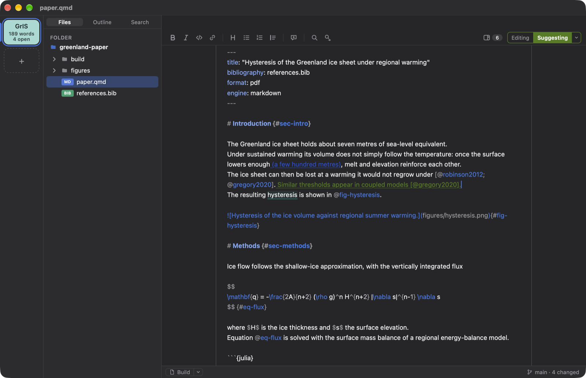

Suggest and comment, beside the text
Switch to Suggesting and type: what you write is a suggestion in your colour, as in Word or Google Docs. Select text and add a comment. The review panel lists them all, to accept, reject, answer or resolve.
The manuscript itself never holds the markup. Each person's suggestions and comments are a file of their own
in .papers-write/, written by appending, so git merges two reviewers without a conflict, and a
suggestion follows the text as it changes.
